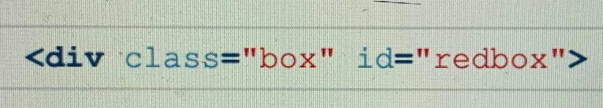

CSS Specificity
ภาษา CSS เหมือนภาษาการเขียนโปรแกรมอื่น ๆ ที่อ่านโค้ดจาก บน – ล่าง ครับ แปลว่า ถ้าเขียน CSS Selector ซ้ำกัน 2 อัน อันล่างจะถูกนำไปใช้งานเพราะใหม่กว่า ตัวอย่างเช่น
<-style> type="text/css"><-/style>
p{color:#black;}
p{color:#red;}
<-/style>
จากค่า CSS ด้านบน จะพบว่าค่าสีของ p จะเป็นสีแดง
Css Specificity คือค่าบางอย่างที่จะจะบอก browser ว่าให้เลือกใช้ Style ตัวไหนมาแสดงผลหน้าเว็บ แน่นอนว่าจะต้องมีการคำนวนค่าออกมาเพื่อให้ browser รู้ได้นั่นเอง
ตัวอย่างง่าย ๆ ของเรื่อง CSS Specificity คือ ถ้าเราเขียน HTML/CSS แบบนี้:
HTML:

CSS:
เราจะได้กล่องสีแดงมา 1 กล่อง ดังด้านล่างนี้ครับ
test
CSS Selector ทั้ง 2 อันของเรามีค่าพลังต่างกัน โดยค่าพลังจะคำนวณจากการใช้ class, ID, !important หรือการซ้อน Element หลาย ๆ ชั้นครับ ยิ่ง Selector นั้นเจาะจงเท่าไหร่ยิ่งมีค่าพลังเยอะเท่านั้น เรามาดูกันว่า CSS Selector ในตัวอย่างมีค่าพลังเท่าไหร่กันบ้าง
.box { } มีค่าพลัง 10
#redbox { } มีค่าพลัง 100
เพราะฉะนั้น CSS Property ใน #redbox { } (ค่าพลัง 100) จะถูกดึงมาแสดงผลทับของ .box { } (ค่าพลัง 10) เพราะมี ค่าพลังมากกว่า นั่นเอง
วิธีคำนวณ “คะแนน” CSS SPECIFICITY
กลุ่มการเขียน style มีหลายแบบ ซึ่งในกลุ่มเดียวกันนั้น มันจะมีคะแนน specificity เท่ากัน
(1) Inline style
(2) ID selectors
(3) Class selectors, Attributes selectors, Pseudo-classes
(4) Type selectors, Pseudo-elements
(5) Universal selector, Combinators, Negation pseudo-class
ต่อไปผมกำหนดค่า specificity ให้แต่ละกลุ่มดังนี้
แบบ (1) มีค่า specificity = 1000
แบบ (2) มีค่า specificity = 100
แบบ (3) มีค่า specificity = 10
แบบ (4) มีค่า specificity = 1
แบบ (5) มีค่า specificity = 0 (ไม่มีค่า)
ซึ่งค่าด้านบน เป็นค่าต่อ 1 ตัวเท่านั้น หากผมเขียน selector เป็น
.containner.wrapper = { ... }
แสดงว่าผมจะได้ค่า specificity เป็น 20 ( เพราะ 1 class มีค่า 10 ถ้า 2 class = 10+10)
ตัวอย่าง
div a {...} = 1+1 = 2
div h1 a apan {...} = 1+1+1+1 = 4
.page h1 #title {...} = 10+1+100 = 111
#nav .selected > a:hover = 100+10+1+10 = 121
li:first-child h2 .title = 1+10+1+10 = 22
ตัวอย่างการใช้งาน
HTML:
CSS:
ผลลัพธ์ที่ได้คือ
เพราะ การเขียนแบบแรกมีค่า specificity มากกว่าแบบหลังนั่นเอง (110 > 101)
สำหรับคำสั่ง !important นั้นถ้าใส่เข้าไปจะเป็นการบังคับใช้ CSS นั้นทันที ไม่ต้องดู คะแนน เลย (หรือจะใช้วิธีจำว่าค่าพลัง Infinity เลยก็ได้)
สำหรับใครที่ขี้เกียจคำนวณค่าพวกนี้ จริงๆมันก็มี web ให้เราสามารถ copy selector ไปวางได้เลยที่
specificity calculator